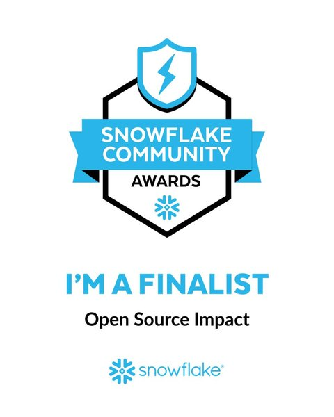
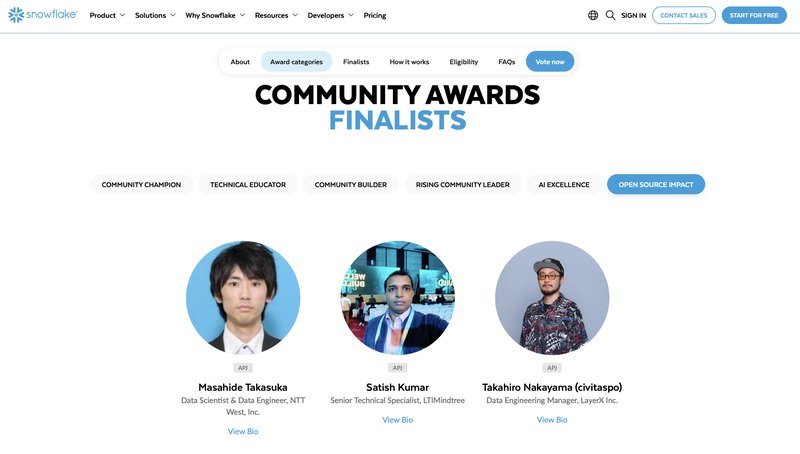

Snowflake Chronicles
Snowflake ChroniclesLoading…
Snowflake Chronicles
Satish Kumar · LTIMindtree, India
Learn more about the Community Awards and this year's finalists →Scan to vote directly, or use the button below.
tinyurl.com/vote4satishOpen the ballotScan the code above, or tap Vote below.
Go to Page 6 → Open Source Impact → APJLook for "Satish Kumar · LTIMindtree, India"
Confirm and submit — that's it.tinyurl.com/vote4satish
Blocked on your work network? Scan the QR code above from a personal device or mobile network. · Watch the how‑to video

Support the nomination — like or share the post →
Every vote, connection, like, share, and message is genuinely appreciated. ❤️